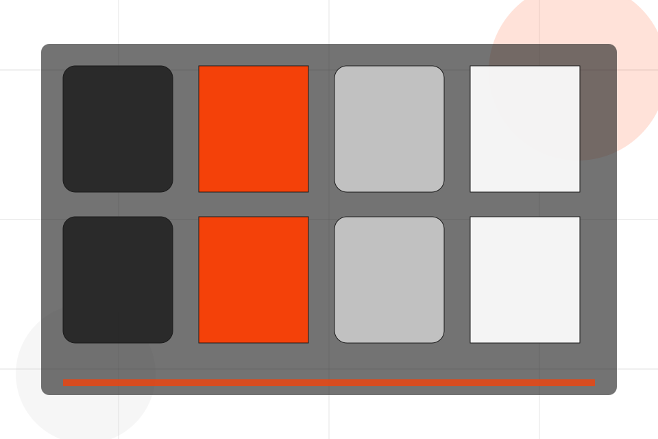
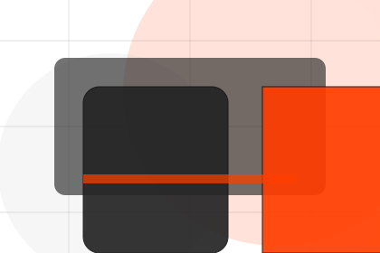
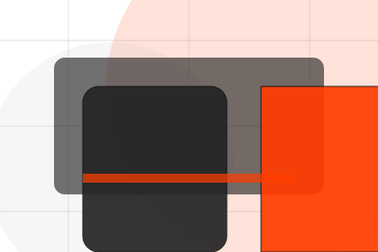
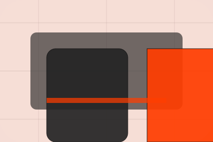

Programs / 01
Programs by Pulse
Programs shaped for sports, fitness & recreation decisions.
Programs opens as a clear sports decision hub: what Pulse offers, who it helps, why it matters, and which route to take first.
The first screen combines positioning, proof, primary action, and fast internal navigation, so people can act immediately or compare the rest of the programs route with context.
Sports scopeCompare optionsRequest advice

Programs / 02
Compare service routes
Beginner explains the practical scope, best-fit situations, and expected outcome so sports visitors can compare options without decoding jargon.
The section keeps the offer concrete: what is included, who it is best for, what decision it supports, and which linked route gives the deeper detail.
Explore ProgramsPulse structures beginner around best fit, what changes, and a clear next route so visitors can compare the block quickly before they join a class.
Join ClassPrograms / 04
Compare service routes
Recovery explains the practical scope, best-fit situations, and expected outcome so sports visitors can compare options without decoding jargon.
The section keeps the offer concrete: what is included, who it is best for, what decision it supports, and which linked route gives the deeper detail.
Explore ProgramsBest Fit
Who should use recovery and when it belongs in the programs journey.
What Changes
The practical benefit visitors should expect after choosing this route.
Deeper Route
Where to compare details, pricing, support, or contact options before committing.
Programs / 05
Compare service routes
Weight explains the practical scope, best-fit situations, and expected outcome so sports visitors can compare options without decoding jargon.
The section keeps the offer concrete: what is included, who it is best for, what decision it supports, and which linked route gives the deeper detail.
Explore ProgramsWho should use weight and when it belongs in the programs journey.
The practical benefit visitors should expect after choosing this route.
Where to compare details, pricing, support, or contact options before committing.
Programs / 06
Compare service routes
Strength explains the practical scope, best-fit situations, and expected outcome so sports visitors can compare options without decoding jargon.
The section keeps the offer concrete: what is included, who it is best for, what decision it supports, and which linked route gives the deeper detail.
Explore Programs- 01
Best Fit
Who should use strength and when it belongs in the programs journey.
- 02
What Changes
The practical benefit visitors should expect after choosing this route.
- 03
Deeper Route
Where to compare details, pricing, support, or contact options before committing.
Programs / 07
Compare service routes
Plans explains the practical scope, best-fit situations, and expected outcome so sports visitors can compare options without decoding jargon.
The section keeps the offer concrete: what is included, who it is best for, what decision it supports, and which linked route gives the deeper detail.
View Pricing
Best Fit
Who should use plans and when it belongs in the programs journey.
What Changes
The practical benefit visitors should expect after choosing this route.
Deeper Route
Where to compare details, pricing, support, or contact options before committing.
Start
Who should use plans and when it belongs in the programs journey.
ScopedGrow
The practical benefit visitors should expect after choosing this route.
QuotedScale
Where to compare details, pricing, support, or contact options before committing.
RetainerPrograms / 08
Compare service routes
Outcomes explains the practical scope, best-fit situations, and expected outcome so sports visitors can compare options without decoding jargon.
The section keeps the offer concrete: what is included, who it is best for, what decision it supports, and which linked route gives the deeper detail.
Explore ProgramsBest Fit
Who should use outcomes and when it belongs in the programs journey.
Programs / 09
Compare service routes
Fit explains the practical scope, best-fit situations, and expected outcome so sports visitors can compare options without decoding jargon.
The section keeps the offer concrete: what is included, who it is best for, what decision it supports, and which linked route gives the deeper detail.
Explore ProgramsBest Fit
Who should use fit and when it belongs in the programs journey.
What Changes
The practical benefit visitors should expect after choosing this route.

Deeper Route
Where to compare details, pricing, support, or contact options before committing.
Programs / 10
Join Class
Pulse closes the programs route with a clear action, a quick reminder of the value, and a low-friction way to join a class.
Visitors who are ready can use the primary action. Visitors who are still comparing can scan the section links, proof, and support routes before they join a class.
Join ClassThe final block keeps the choice simple: act now, compare one more proof route, or send enough detail for a focused response.
Join Classprogress and belonging
Join Class
A fitness site with athlete-scale hero, program cards, coach proof, schedule filters, and membership CTAs. Programs ends with a direct path to join a class, plus enough context for visitors who still need to compare.

Join ClassImportant notes before you act
Fitness guidance should be adapted to health status and professional advice where needed.